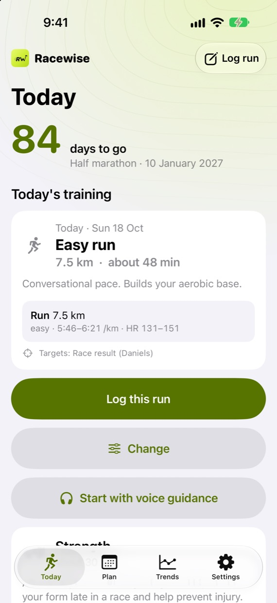

Un plan que se adapta a cómo te sientes.
Cuéntale a RaceWise para qué entrenas y en qué nivel estás hoy. Planifica cada semana hasta el día de la carrera y cambia el plan cuando estás cansado, con dolor o con poco tiempo.


Android, en desarrollo.

Nuevo Planes de caminata y COROS en tu reloj · Ya en Español, Français y Português →
Una semana que cambia contigo
Una semana de un plan de medio maratón. Prueba lo que te trae una semana real.
- LunDescanso
- MarIntervalos6 × 800 mIntervalosMovida
Día complicado, así que la sesión pasó al jueves.
- MiéTrote suave6 kmTrote suave
6 km4 kmTu VFC salió baja esta mañana, así que hoy es más corto.
- JueDescansoIntervalos6 × 800 m
Pasó aquí porque nunca hay dos días intensos seguidos.
- VieFuerza25 min
- SábFondo largo16 km
Enviado a tu Apple Watch, paso a paso.Solo iPhone
- DomDescansoNado1.5 km suave
Varios deportes en un plan.Pro
La versión gratis es un plan completo, no una prueba. Un deporte, todos los controles de seguridad y tus sesiones en el Apple Watch, sin límite de tiempo. Compara Gratis y Pro
RaceWise en acción
Empieza desde donde estás
Si recién empiezas a correr
Elige “Empezar desde cero”. Comienzas corriendo un minuto a la vez y avanzas semana a semana, con cada logro marcado. ¿No sabes cuándo? RaceWise te sugiere una fecha.
Si ya entrenas
Elige una carrera entre cientos de eventos verificados o pon tu propia fecha, y empieza ahora o hasta cuatro semanas después. Agrega todas las carreras en las que te inscribiste: las primeras se vuelven carreras de preparación. Entrena por ritmo, frecuencia cardíaca, potencia o sensación.
Explora el calendario de carreras →
- Correr
- Caminata
- Natación
- Ciclismo
- Remo
- Senderismo
Dile qué cambió, en una frase
¿Sales de viaje el jueves? ¿Quieres mover la salida de mañana? Escríbelo o dilo con el micrófono del teclado o con Siri. RaceWise calcula los cambios y te muestra cada uno antes de guardar nada. Lo que haría inseguro tu plan no se aplica.
¿Te vas de vacaciones? Agrega las fechas y el plan se acomoda, con días suaves a tu regreso. ¿Esta semana solo tienes un par de días libres? Elígelos y mira qué se mueve y qué se quita.
El jueves y el viernes estoy de viaje por trabajo.
Lo que entendí
- Jue El ritmo sostenido pasa al sábado
- Vie Se omite el trote suave
- Dom El fondo largo sigue como estaba
Ejemplo. Ves los cambios antes de que se guarden.
El día de la carrera, planificado
Tu ritmo objetivo, el desayuno y la hidratación son gratis. Pro agrega un parcial por cada kilómetro y la carrera dividida en tres partes.
- km 1–75:40
- km 8gel
- km 8–165:35
- km 15gel
- km 17–21.15:30
¿Una carrera con cuestas? Ingresa el desnivel del recorrido y las semanas de desarrollo agregan repeticiones en cuesta y fondos largos con subidas. ¿No tienes cuestas cerca? Te dice qué hacer en su lugar.
¿Una gran caminata de montaña? Cada 100 m de subida cuentan como un kilómetro extra. Tu mochila pesa un poco más cada pocas semanas, y las últimas semanas incluyen práctica en bajada.
Conoce cómo corres, no solo tus salidas
Técnica de carrera.Pro Cadencia, zancada, contacto con el suelo y oscilación vertical a lo largo de los meses, desde tu Apple Watch (Series 6 o posterior). Si tus pies se quedan en el suelo más de lo normal o tu cadencia baja, RaceWise te lo señala: a menudo significa piernas cansadas.
Kilómetros de zapatillas.Pro Elige tus zapatillas de una lista y cada salida se suma al par correcto. La mayoría de las zapatillas para correr duran 500–800 km; recibes un recordatorio en la distancia que elijas.
Fuerza y estiramientos en 3D
Rutinas cortas para cada deporte, más de 30 ejercicios y sin equipo. Toca un ejercicio y una figura en 3D te muestra cómo se hace; arrástrala para girarla. Los ejercicios de un solo lado se hacen de cada lado. Con Pro, un temporizador cuenta series y descansos, también en la pantalla bloqueada, y las sesiones intensas traen ejercicios de calentamiento antes y estiramientos después.
Antes de salir
Con el clima activado, RaceWise revisa el calor donde entrenas y te dice cuánto bajar el ritmo. En los últimos diez días muestra el pronóstico para el día de la carrera. Los datos del clima vienen de Apple Weather; la calidad del aire y el polen, de Google.
Una ruta para la sesión.Pro Rutas de la distancia justa desde donde estás, para seguir en Google Maps o Apple Maps.
Un coach que no puede cambiar tus números
Apple Intelligence™ escribe las notas del coach en tu iPhone, así que lo que escribes se queda en tu teléfono. Los ritmos, distancias y fechas vienen del plan. Si una nota tiene un número que no está en tu plan, ves un resumen simple en su lugar.
Hoy toca un trote suave de 7.5 km a 5:46–6:21 /km. A un ritmo en el que puedas conversar. Construye la base para el 17 de enero.
Aumentos lentos y constantes
Cada plan pasa un control de seguridad. El volumen semanal sube no más de un 10%, y más despacio para principiantes, atletas mayores y quien vuelve de una lesión. Si el dolor se repite después de un tipo de sesión, te ofrece una versión más suave. Dolor en el pecho, palpitaciones o dolor agudo en un hueso: detente y hazte revisar.
BaseDesarrolloPuesta a punto
También en la app
- Guía de vozCon el teléfono en el bolsillo, RaceWise te guía en cada paso y te dice tu ritmo.
- Después de cada salidaUna o dos frases sobre cómo te fue frente al plan.
- ProgresoGráficos para cada deporte y una puntuación de forma física para correr basada en tus resultados reales.
- Después de la metaConsejos de recuperación; luego planifica la próxima carrera, mantén tu forma o tómate un descanso.
- Pregúntale a SiriSolo iPhoneLa sesión de hoy, un chequeo o un entrenamiento registrado por voz.
- CompartirTarjetas y stickers, incluidos un número de corredor y una medalla.
- Pantalla bloqueadaProSesiones guiadas, el temporizador de ejercicios y una cuenta regresiva para la mañana de la carrera. También widgets en la pantalla de inicio.
- Carreras desde un pósterProToma una foto del póster de una carrera y RaceWise completa los datos.
- Centro de controlSolo iPhoneRegistra un entrenamiento, haz tu chequeo o mira la sesión de hoy con un toque.
Tus sesiones en tu GarminPro en iPhone
Conecta la app Garmin Connect™ y las sesiones de carrera, ciclismo y natación en piscina de la próxima semana van a tu calendario de Garmin con objetivos de ritmo y frecuencia cardíaca. Las actividades de Garmin terminadas regresan y el plan se ajusta. En Android (en desarrollo), por ahora es gratis.
Tus sesiones en tu COROSPro en iPhone
Conecta COROS y las sesiones de carrera y ciclismo de los próximos 7 días, y tus carreras, van a tu calendario y reloj COROS paso a paso, con objetivos de ritmo, frecuencia cardíaca o potencia. Las carreras van en vueltas de un kilómetro sin objetivos. Si tu app de COROS guarda los entrenamientos en Salud de Apple, los terminados regresan desde ahí y el plan se ajusta. La natación y el remo se quedan en RaceWise. COROS no deja que otras apps muevan o borren sesiones, así que si una sesión pasa a otro día, borra la antigua en la app de COROS.
Novedades
Nuevo en la versión 1.1
- Planes de caminata
- Técnica en cada deportePro
- Sesiones en tu COROSPro
- Español, Français y Português
- Rodadas en interior y clases de spinning
- Calles reales detrás de tu ruta en las imágenes que compartes
Gratis y Pro
Pro hace más fácil entrenar. Todo lo relacionado con la seguridad es gratis.
Gratis
- Un plan completo para un deporte: una carrera, un objetivo o un hábito
- Chequeos diarios y ajustes por dolor y recuperación
- Consejos para el calor y pronóstico del día de la carrera
- Sesiones en el Apple Watch, paso a pasoSolo iPhone
- Notas del coach y guía de voz
- Fuerza y estiramientos con figuras en 3D
- Tendencias y puntuación de forma física para correr
- Ritmo objetivo y nutrición para el día de la carrera
- Cambia tu plan con una frase, vacaciones y semanas complicadas
RaceWise Pro
- Varios deportes en un plan
- Garmin Connect, en ambos sentidos
- Sesiones en tu COROS
- Plan completo para el día de la carrera con parciales
- Rutas para tus sesiones
- Pantalla bloqueada y widgets
- Temporizador de ejercicios
- Pregunta sobre tu plan, agrega carreras desde una foto
- Ejercicios de calentamiento y estiramientos de vuelta a la calma
- Tendencias de técnica de carrera
- Kilómetros de zapatillas
- Stickers de ruta
Pro es una suscripción mensual o anual, con 14 días gratis. Los precios se muestran en el App Store. Cancela cuando quieras en los ajustes de tu cuenta de Apple. RaceWise Pro llegará más adelante a Android.
Obtén RaceWise
Gratis para un deporte, sin límite de tiempo.
Tu entrenamiento es solo tuyo.
Sin cuenta, sin anuncios y sin analíticas. Tu plan se queda en tu iPhone y en tu propio iCloud, y nada se vende ni se comparte. Solo se usa un pequeño servidor para los informes de fallos y si conectas Garmin o COROS o envías comentarios. Puedes borrar todo desde la app. Política de privacidad (en inglés)
¿Preguntas o ideas?
Escribe a racewiseapp@gmail.com o usa Ajustes › Ayuda y privacidad › Enviar comentarios en la app.
RaceWise da orientación general de entrenamiento, no consejo médico. Si algo te duele, detente y consulta a un médico o fisioterapeuta.